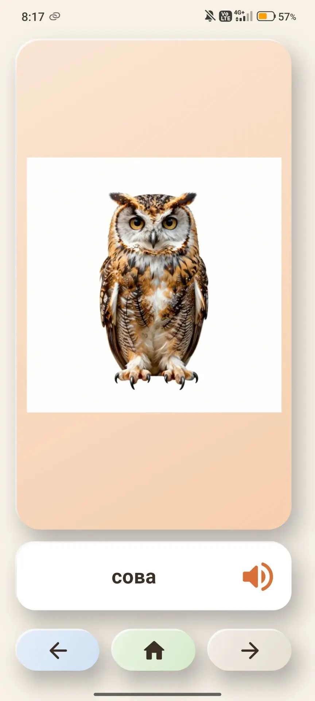
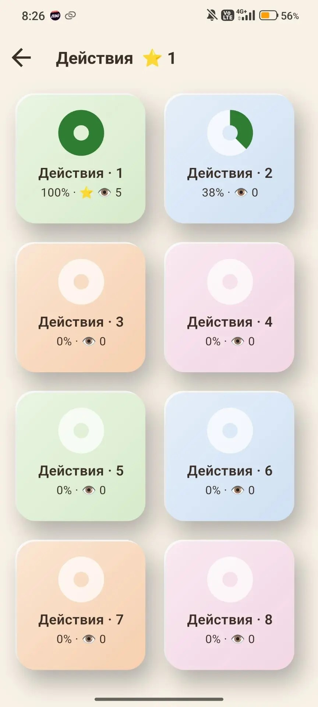
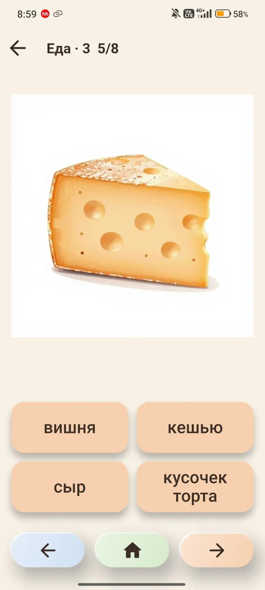
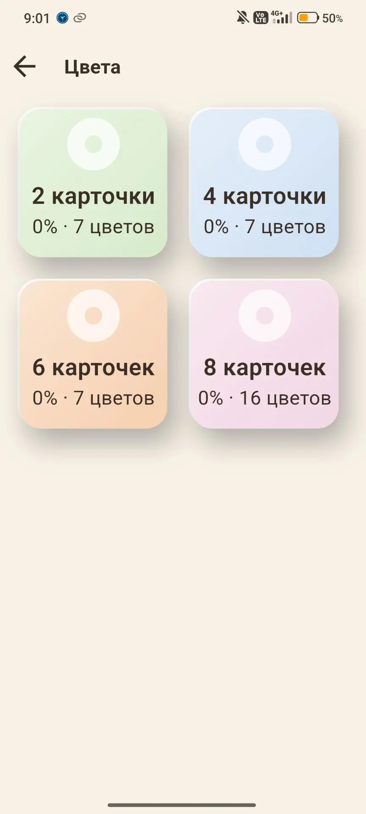
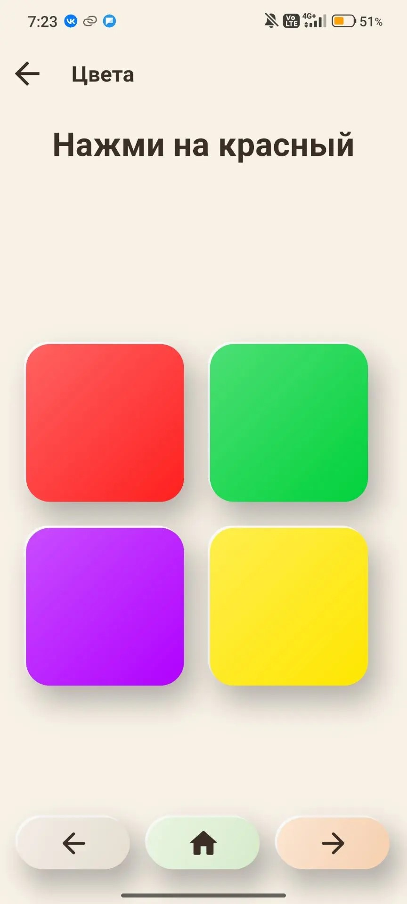
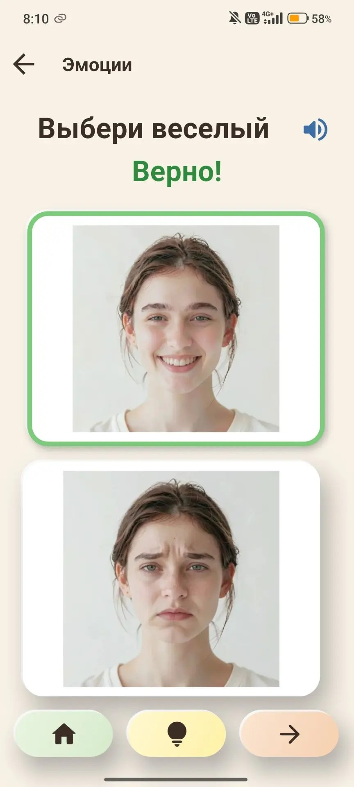
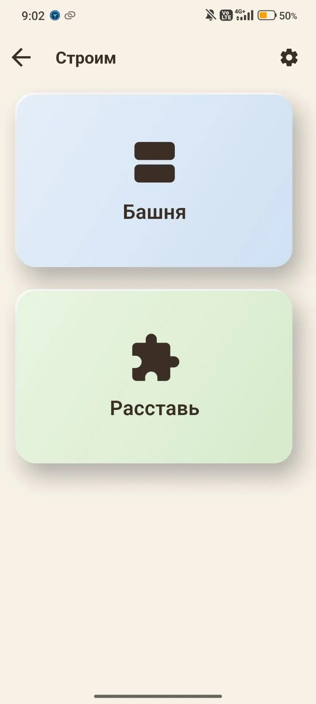
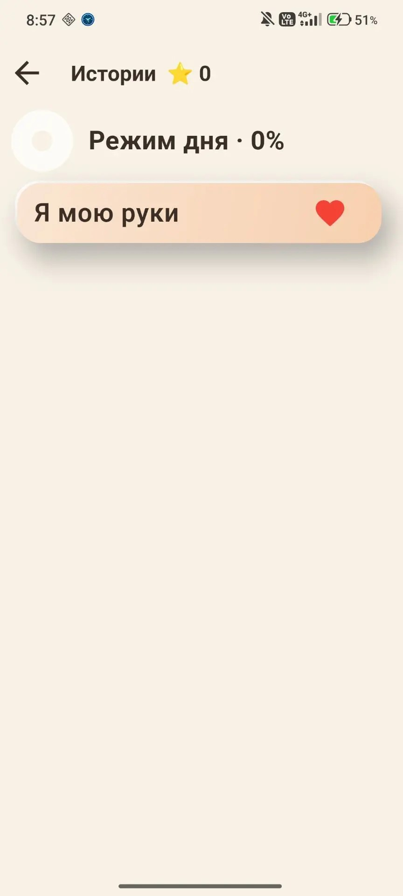

Что внутри
Приложение работает без интернета и регистрации. Профилей можно завести несколько — у каждого свой прогресс и ⭐.
Слова
Карточки со словами по темам: картинка и слово, которое произносит голос. Наборы по 8 слов; на плашке видно, сколько раз набор просмотрен.
Ребёнок: Ребёнок смотрит картинку и слушает слово, листает карточки.
Родитель: Выбирает тему и помогает повторять слова вслух.


Угадай слово
Уровни по категориям: слово звучит, нужно выбрать верную картинку из нескольких.
Ребёнок: Нажимает на картинку, которая подходит слову.
Родитель: Хвалит за успехи, смотрит, какие слова угаданы с первой попытки.


Цвета
Наборы заданий на цвета: «Выбери красный» — среди ярких вариантов.
Ребёнок: Находит и нажимает нужный цвет.
Родитель: Выбирает набор и закрепляет названия цветов.


Эмоции
Лица с разными эмоциями: «Выбери радость». Наборы повторяются несколько раз.
Ребёнок: Выбирает лицо с названной эмоцией.
Родитель: Проговаривает эмоции, обсуждает с ребёнком, когда они бывают.


Строим
Две игры на мелкую моторику и внимание: «Расставь» — вставить круг, квадрат, треугольник и звезду в вырезы доски; «Башня» — построить такую же башню из фигур.
Ребёнок: Перетаскивает фигуры на нужные места.
Родитель: Задаёт число фигур в настройках игры.


Истории
Библиотека коротких историй по категориям и местам; пройденные отмечены значком. Истории не по возрасту профиля серые, но доступны.
Ребёнок: Слушает и смотрит историю.
Родитель: Читает вместе, обсуждает сюжет.


Для родителей
Закрытый раздел: профили, прогресс по играм, настройки (автозвук, автолистание, число повторов и фигур).